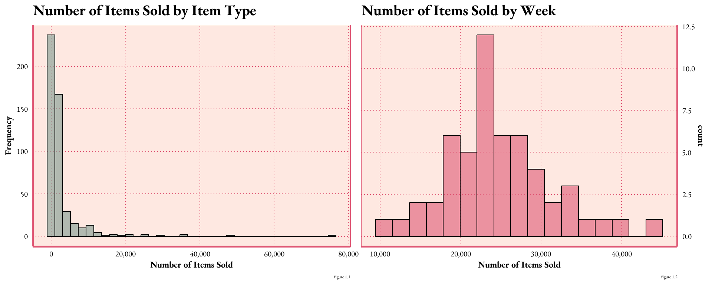
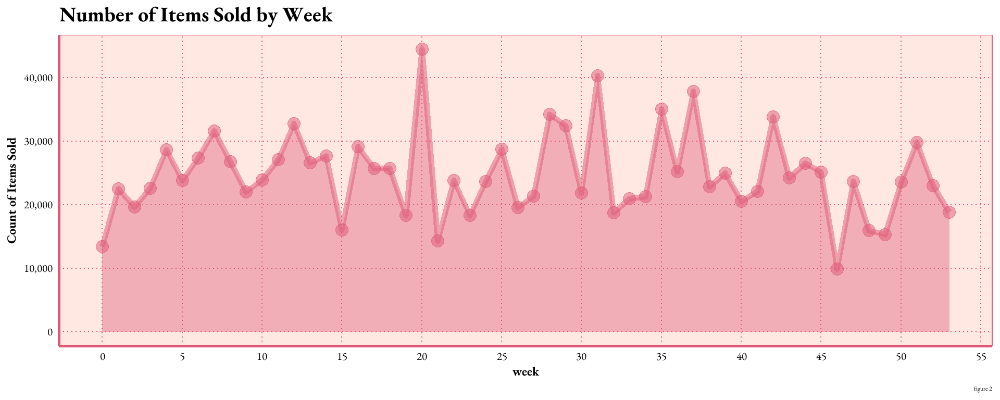
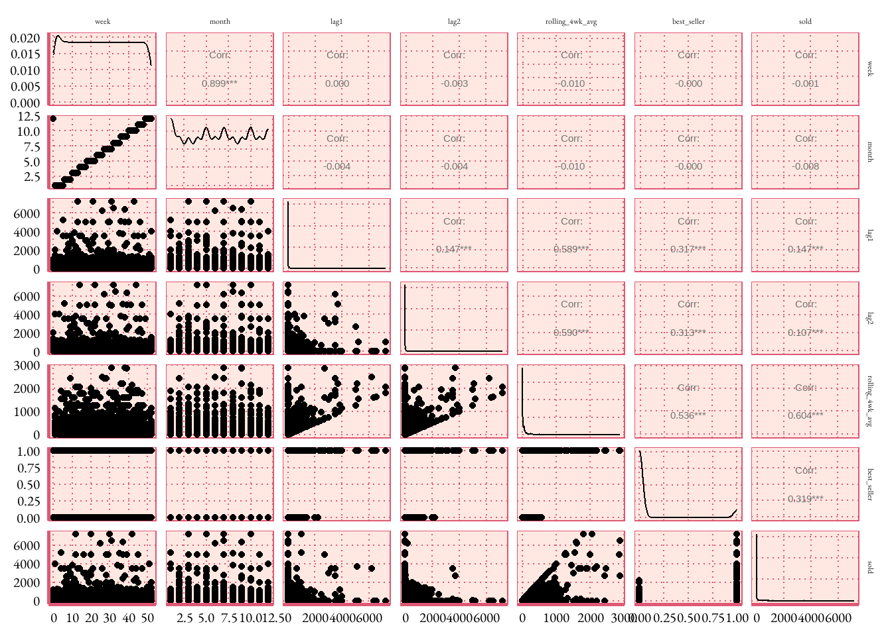
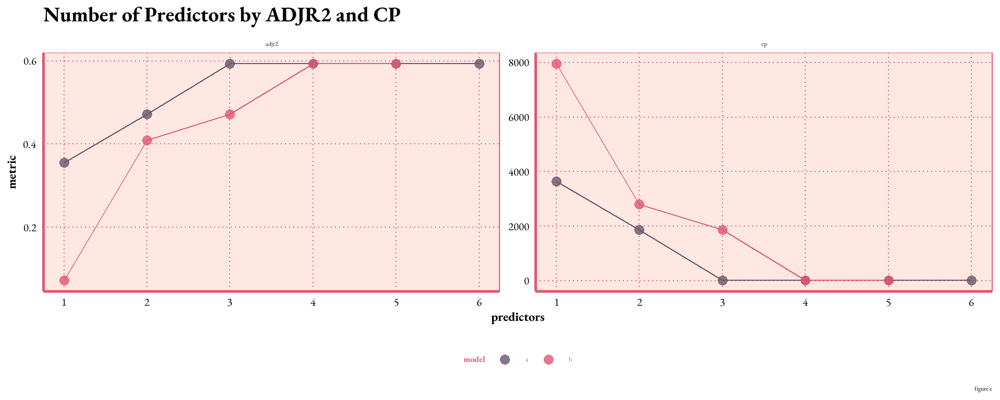

limitations: 12 months of data is not great for this preserves the temporal order. A more robust data set to work on would include a couple years of data
steps:
exploratory analysis and descriptive analytics -
feature engineer new variables -
step-wise model selection
test and train a predictive model
interpret and evaluate the results
visualize the process
Initial Insights:
The initial inventory data set contains 488 items sold over the course of 54 weeks (0-53)
The figures below distribution of items sold by item type and week. The line graph shows the seasonality of the product
Code
hist <- sai %>%group_by(item_no) %>%summarise(total_sold =sum(sold)) %>%ggplot(aes(x = total_sold)) +geom_histogram(binwidth =2100, color ="black", fill ="#7D998F", alpha = .6) +scale_x_continuous(labels = scales::comma_format()) +labs(x ="Number of Items Sold", y ="Count of Item Type", title ="Number of Items Sold by Item Type", caption =" figure a")+theme_art_nouveau()hist1 <- sai %>%group_by(week) %>%summarise(total_sold =sum(sold)) %>%ggplot(aes(x = total_sold)) +geom_histogram(binwidth =2100, color ="black", fill ="#DF5875", alpha = .6) +scale_x_continuous(labels = scales::comma_format()) +scale_y_continuous(position ="right") +labs(x ="Number of Items Sold", y ="Count of Weeks", title ="Number of Items Sold by Week",caption =" figure b")+theme_art_nouveau()# display the histograms side by sidegridExtra::grid.arrange(hist, hist1, ncol =2)

What does this histogram tell me?
sales per week is slightly more evenly distributed throughout the sales cycle
the average week sells ~25K
Code
line1 <- sai %>%group_by(week) %>%summarise(total_sold =sum(sold)) %>%ggplot(aes(x = week, y = total_sold)) +geom_line(size =2, alpha =0.5, color ="#DF5875") +geom_point(size =4, alpha =0.5, color ="#DF5875")+geom_area(fill ="#DF5875", alpha =0.4) +scale_x_continuous(breaks =seq(0, 55, by =5)) +scale_y_continuous(labels = scales::comma_format()) +labs(x ="week", y ="Count of Items Sold", title ="Number of Items Sold by Week",caption =" figure c")+theme_art_nouveau()line1

Feature engineering
I needed to create a few more variables help with the predictions:
(link to data dictionary)
totals for each item over the year
which items are best selling? top ten items based on volume
convert weeks to dates so we can extract the month
lag period for seasonality
rolling mean
Code
# total yearly sales for each iteminventory_sum <- sai %>%group_by(item_no) %>%summarise(year_total =sum(sold), .groups ="drop")sai <-left_join(sai, inventory_sum, by =c("item_no"))#### calculate the top 10% thresholdtop_10_threshold <-quantile(sai$year_total, 0.9)# dummy variable for bestsellers 1= yes 0 = nosai <- sai %>%mutate(best_seller =ifelse(year_total >= top_10_threshold, 1, 0))## figure out month an year for data, assuming the data is from 2022# week 0: December 27, 2021 - January 2, 2022# week 52: December 19, 2022 - December 25, 2022# week 53: December 26, 2022 - January 1, 2023sai$year <-2022sai <- sai %>%mutate(calendar_week =ifelse(week ==0, 52, ifelse(week ==53, 1, week)),calendar_year =ifelse(week ==0, year -1, ifelse(week ==53, year +1, year)))# Now use calendar_year and calendar_week in the MMWRweek2Date functionsai$date <-MMWRweek2Date(sai$calendar_year, sai$calendar_week)# find the year the week ends in, so we can figure out monthssai <- sai %>%mutate(wk_ending_year =ifelse(week %in%c(0, 53), year +1, year),week =ifelse(week ==53, 1, week))# create teh data and extract the month# wanted month to be quantitative to reduce model complexitysai$date <-MMWRweek2Date(sai$wk_ending_year, sai$calendar_week)sai$month <-month(sai$date, label =TRUE)sai$month <-month(sai$date)# create lag periods# https://www.youtube.com/watch?v=Kn3llTjYS5Esai <- sai %>%mutate(lag1 =lag(sold, 1),lag2 =lag(sold, 2))# https://www.rdocumentation.org/packages/zoo/versions/1.8-12/topics/rollmeansai <- sai %>%group_by(item_no) %>%mutate(rolling_4wk_avg = zoo::rollmean(sold, k =4, fill =NA, align ="right")) %>%ungroup()write.csv(sai, "FEinventory.csv")
Code
month_abbreviations <-c("Jan", "Feb", "Mar", "Apr", "May", "Jun", "Jul", "Aug", "Sep", "Oct", "Nov", "Dec")sai_average <- sai %>%filter(wk_ending_year ==2022) %>%group_by(month) %>%summarise(month_average =mean(sold))bar <- sai %>%filter(wk_ending_year ==2022) %>%mutate(month =factor(month, levels =1:12, labels = month_abbreviations)) %>%ggplot(aes(x = month, y = sold)) +geom_bar(stat ="sum", fill ="#68576D", alpha =0.75) +labs(x ="Month", y ="Total Sold", title ="Total Sold by Month",caption =" figure d") +theme_art_nouveau() +theme(legend.position ="none")dot <- sai_average %>%mutate(month =factor(month, levels =1:12, labels = month_abbreviations)) %>%ggplot(aes(x=month, y= month_average)) +geom_point(size =4, shape =8, alpha = .75)+scale_y_continuous(position ="right") +labs(x ="Month", y ="Average Sold", title ="Average Items Sold by Month",caption =" figure e") +theme_art_nouveau() gridExtra::grid.arrange(bar, dot, ncol =2)

splitting the data
Code
# create a list of all items to randomly selectset.seed(1985)items_sample_list <-unique(sai$item_no) %>%sample(366)# 75% of the data# splitting the inventory by item type to keep the temporal orderis_train <- sai %>%filter(item_no %in% items_sample_list) %>% dplyr::select( item_no, week, month, lag1, lag2, rolling_4wk_avg, best_seller, sold) #not sure why i had to include the dplyr packageis_test<- sai %>%filter(!(item_no %in% items_sample_list)) %>% dplyr::select( item_no, week, month, lag1, lag2, rolling_4wk_avg, best_seller, sold) #not sure why i had to include the dplyr package
create a model based on the best selling item, inventory with more items sold are more predictable.
Model Selection
find the best model using stepwise selection find the 2 best methods for every size predictors reasons to use stepwise with caution - reason a - reason b - reason c
define generalized linear regression and why I chose this for the model
Code
# https://youtu.be/IScjygOnO0w# forward Stepwise Selection# nvmax = 8 specifies the maximum number of predictors to incorporate in the model.is_mod <-regsubsets(sold ~ week + month + lag1 + lag2 + rolling_4wk_avg + best_seller,data = is_test, nbest =2, method ="exhaustive")is_mod_summary_mx <-with(summary(is_mod), data.frame(rsq,adjr2, cp, rss, outmat))is_mod_summary_mx$predictors <-c(1,1,2,2,3,3,4,4,5,5,6) # for graphingis_mod_summary_mx$model <-c('a','b','a','b','a','b','a','b','a', 'b', 'a') # for graphing
Code
# turn results into a pretty table# is_mod_summary_mx
model evaluation
Code
# make this chart prettiercustom_colors <-c("#68576D", "#DF5875")is_mod_summary_mx %>%pivot_longer(c(adjr2, cp), names_to ="metric", values_to ="value") %>%ggplot(aes(x = predictors, y = value, color = model)) +geom_line(show.legend =FALSE) +geom_point() +facet_wrap(~metric, scales ="free") +scale_x_continuous(breaks =1:6) +scale_color_manual(values = custom_colors) +# Set custom colors heretheme_art_nouveau()

[interpret the graph]
explain why this is the best one what do each of these things tell me? - rsq -> highest r squared, explains the variability in the model - adjr2 - > highest - cp -> smallest - rss -> smallest
having trouble choosing, i spent a lot of time making my variables so lets look at AIC several models what is AIC? Lower AIC values indicate a better-fit model, and a model with a delta-AIC (the difference between the two AIC values being compared) of more than -2 is considered significantly better than the model it is being compared to
find the coefficients and (Akaike Information Criterion) AIC Multiple linear regression compare the three best models